Brisa
Calor seguro na escola: previsão com IA, sensores nas salas e
recomendações para proteger estudantes durante o calor extremo
O calor extremo deixou de ser um desconforto ocasional e passou a interromper a escolarização: em 2024, ondas de calor foram o evento climático que mais afetou estudantes no mundo, com cerca de 171 milhões atingidos (UNICEF, 2025). Este trabalho apresenta o Brisa, uma prova de conceito que ajuda a coordenação de escolas públicas a antecipar e gerenciar o calor durante as aulas. Com dados meteorológicos reais (Open-Meteo/ERA5, horários, 2020-2025) de cinco capitais brasileiras, medimos quanto do tempo de aula passa em faixas de risco do índice de calor do NWS/NOAA e treinamos modelos que, às 09h, preveem o pico do índice entre 12h e 17h. O Random Forest obteve MAE de 1,33 °C e R² de 0,889 na regressão, e acurácia de 83,6% na classificação da faixa, em teste fora da amostra (2024-2025), superando a linha de base de persistência. O protótipo inclui firmware para ESP32 com sensor DHT22, banco SQLite com regras de integridade, motor de alertas, menu de terminal e painel web. A demonstração integrada usa uma escola fictícia com leituras internas simuladas, identificadas como tais. O projeto se relaciona aos ODS 3, 4, 11 e 13 e propõe indicadores para medir seu impacto num piloto real.
Palavras-chave: calor extremo; escolas; índice de calor; Random Forest; ESP32; CitizenTech.
O Brasil vive anos seguidos de recordes de temperatura. Segundo dados do INMET divulgados em janeiro de 2025, 2024 foi o ano mais quente da série histórica do país, superando 2023 (EXAME, 2025). Um estudo do INPE citado pela Revista Pesquisa FAPESP (2025) indica que o número médio de dias com ondas de calor passou de cerca de 7 por ano (1961-1990) para 52 por ano (2011-2020). O calor tem custo humano: Monteiro dos Santos et al. (2024) estimaram 48.075 mortes atribuíveis a ondas de calor entre 2000 e 2018 em 14 regiões metropolitanas brasileiras, com efeito maior entre idosos, mulheres, pessoas pretas e pardas e pessoas com menor escolaridade.
A escola sente esse efeito todos os dias. O relatório Learning Interrupted (UNICEF, 2025) contabilizou pelo menos 242 milhões de estudantes em 85 países ou territórios com aulas afetadas por eventos climáticos em 2024, e as ondas de calor foram o principal fator, com cerca de 171 milhões de estudantes atingidos. A própria publicação ressalta que a estimativa é conservadora por limitações de dados.
Hoje, a decisão de adaptar a rotina escolar ao calor costuma ser reativa e subjetiva. Os avisos meteorológicos são regionais e chegam como "onda de calor nos próximos dias", sem dizer qual sala estará perigosa em qual horário nem o que fazer. Salas no último andar ou sob telhado de fibrocimento podem ficar bem mais quentes que o ambiente externo, e a coordenação só percebe quando alguém passa mal.
Objetivo geral: desenvolver uma prova de conceito que transforme dados meteorológicos e leituras de sensores em avisos antecipados e recomendações práticas sobre o calor em escolas.
Objetivos específicos:
| ODS | Meta relacionada (ONU) | Contribuição do Brisa |
|---|---|---|
| 3 Saúde e bem-estar | 3.d: reforçar a capacidade de alerta precoce e de gestão de riscos à saúde | Aviso às 09h e alerta em tempo real por sala antes de o risco se materializar |
| 4 Educação de qualidade | 4.a: ambientes de aprendizagem seguros, não violentos, inclusivos e eficazes | Dados por sala para priorizar reformas; aulas remanejadas em vez de canceladas |
| 11 Cidades e comunidades sustentáveis | 11.5: reduzir mortes e pessoas afetadas por desastres | Ondas de calor são desastres: a escola vira ponto de monitoramento e de proteção |
| 13 Ação contra a mudança do clima | 13.1: resiliência e adaptação a riscos climáticos; 13.3: educação sobre o clima | Adaptação local de baixo custo; o painel pode ser usado em aula para discutir clima com dados reais |
Antes de desenvolver, a equipe avaliou três propostas compatíveis com o desafio CitizenTech, usando 12 critérios pontuados de 1 a 5:
| Critério | A · Brisa (calor nas escolas) | B · Consumo de água em moradias populares | C · Acessibilidade de paradas de ônibus |
|---|---|---|---|
| Relevância social do problema | 5 | 4 | 4 |
| Clareza do público beneficiado | 5 | 4 | 5 |
| Disponibilidade de dados confiáveis | 5 | 2 | 3 |
| Viabilidade de implementação | 5 | 4 | 3 |
| Protótipo funcional demonstrável | 5 | 4 | 3 |
| Aplicação coerente de Python | 5 | 5 | 4 |
| Análise de dados e ML com justificativa | 5 | 3 | 3 |
| Potencial de demonstração em vídeo | 5 | 4 | 4 |
| Relação com os ODS | 5 | 4 | 4 |
| Originalidade e diferencial | 4 | 2 | 3 |
| Complexidade compatível com o prazo | 4 | 4 | 3 |
| Resultados mensuráveis | 5 | 4 | 3 |
| Total (máx. 60) | 58 | 44 | 42 |
Decisão: a proposta A teve a maior pontuação (58/60). Ela combina um problema grave e crescente, um público bem definido e dados públicos reais e completos, o que permite treinar e avaliar ML com honestidade, além de usar ESP32 e banco de dados de forma natural, sem forçar tecnologia. A proposta B dependeria quase só de dados simulados, porque não há bases públicas de consumo residencial em alta frequência. A C exigiria coleta de campo extensa e oferece pouco espaço para ML justificável.
O que já existe: o INMET publica avisos meteorológicos de onda de calor por região; a Defesa Civil envia alertas por SMS; aplicativos de previsão mostram a "sensação térmica" da cidade. São serviços valiosos, mas pensados para a população em geral.
Lacunas identificadas: (1) a escala é a cidade ou a região, não a sala de aula; (2) não medem o ambiente interno, onde estudantes passam o dia; (3) não traduzem o risco em decisões da rotina escolar; (4) não geram histórico por escola para orientar investimentos.
Oportunidade: combinar a previsão (boletim das 09h, com dados abertos) e a medição (sensor barato por ambiente) num fluxo único de decisão, com recomendações operacionais e registro em banco.
Proposta de valor: "Saiba às 9h se a tarde será perigosa, veja qual sala está mais quente agora e o que fazer."
Identidade: o nome remete ao alívio do calor. A paleta segue as cinco faixas do índice (verde, amarelo, laranja, vermelho e vinho), um código de cores intuitivo e consistente no painel, nos LEDs do ESP32 e nos gráficos.
Fluxo de uso (jornada da coordenação):
O código fica num pacote Python (src/brisa) com módulos de responsabilidade única. O menu de terminal, o painel web e o notebook chamam as
mesmas funções, o que evita duplicação e facilita os testes. A arquitetura é deliberadamente simples: arquivos CSV, SQLite e um processo Python
bastam para uma escola ou uma pequena rede.
Usamos a API de histórico da Open-Meteo, que disponibiliza a reanálise ERA5/ERA5-Land do Copernicus/ECMWF (Hersbach et al., 2020; Muñoz-Sabater et al., 2021; Zippenfenig, 2023). Baixamos séries horárias de 01/01/2020 a 31/12/2025 para São Paulo, Rio de Janeiro, Cuiabá, Teresina e Manaus (uma capital por região) com temperatura a 2 m, umidade relativa, sensação térmica, vento a 10 m e radiação solar, no fuso America/Sao_Paulo. Total: 263.040 registros (52.608 por cidade). Data da coleta: 17/11/2026.
Resultado do tratamento: 0 duplicatas, 0 valores fora da faixa e 0 nulos. A ERA5 entrega séries completas, mas as regras continuam no código (e testadas) para dados de sensores, que costumam ter falhas.
origem = 'simulado'.Limitações dos dados: a ERA5 é uma grade de ~9 a 25 km e não captura ilhas de calor de bairro nem o interior das salas; o horário escolar não considera feriados nem férias; seis anos são pouco para afirmar tendência climática.
O índice de calor (heat index) estima a temperatura percebida pelo corpo à sombra, combinando temperatura e umidade. Implementamos o algoritmo oficial do NWS Weather Prediction Center: fórmula simples de Steadman e, acima de 80 °F, a regressão de Rothfusz (1990) com os dois ajustes oficiais. Faixas usadas (convertidas de °F): Normal < 26,7 °C; Cautela 26,7-32,2; Cautela extrema 32,2-39,4; Perigo 39,4-51,7; Perigo extremo ≥ 51,7 °C. O Brisa alerta a partir de Cautela extrema.
def indice_de_calor(temp_c: float, umidade: float) -> float:
"""Retorna o índice de calor em °C a partir da temperatura (°C) e UR (%).
Levanta ValueError para entradas fisicamente impossíveis.
"""
if temp_c is None or umidade is None:
raise ValueError("Temperatura e umidade são obrigatórias.")
if not (-50 <= temp_c <= 60):
raise ValueError(f"Temperatura fora da faixa plausível: {temp_c} °C")
if not (0 <= umidade <= 100):
raise ValueError(f"Umidade relativa deve estar entre 0 e 100: {umidade}")
t = celsius_para_fahrenheit(temp_c)
ur = umidade
# 1) Fórmula simples (Steadman); vale quando a média com T fica abaixo de 80 °F
simples = 0.5 * (t + 61.0 + (t - 68.0) * 1.2 + ur * 0.094)
if (simples + t) / 2 < 80:
return round(fahrenheit_para_celsius(simples), 2)
# 2) Regressão de Rothfusz
ic = (-42.379 + 2.04901523 * t + 10.14333127 * ur
- 0.22475541 * t * ur - 0.00683783 * t * t
- 0.05481717 * ur * ur + 0.00122874 * t * t * ur
+ 0.00085282 * t * ur * ur - 0.00000199 * t * t * ur * ur)
# 3) Ajustes oficiais
if ur < 13 and 80 <= t <= 112:
ic -= ((13 - ur) / 4) * math.sqrt((17 - abs(t - 95.0)) / 17)
elif ur > 85 and 80 <= t <= 87:
ic += ((ur - 85) / 10) * ((87 - t) / 5)
return round(fahrenheit_para_celsius(ic), 2)Validação: os testes conferem o resultado com valores da tabela oficial do NWS (ex.: 90 °F e 70% → 106 °F), dentro do erro de ±1,3 °F da regressão. Como checagem independente, a correlação entre o nosso índice e a sensação térmica da Open-Meteo, calculada por outra fórmula, foi de 0,969 (Pearson) em 263 mil horas.
Calculamos média, desvio-padrão, mediana, percentil 95 e máximo do índice em horário escolar; a distribuição por faixa; as horas e os dias
críticos por ano; a correlação de Pearson entre variáveis; e um teste t de Welch comparando o pico diário de 2020-2022 com o de 2023-2025. O código
fica em src/brisa/analise.py e é reproduzido passo a passo no notebook.
def limpar(df: pd.DataFrame) -> tuple[pd.DataFrame, dict]:
"""Remove duplicatas e valores impossíveis; interpola lacunas curtas.
Retorna o DataFrame limpo e um relatório com o que foi tratado.
"""
rel = {"linhas_entrada": len(df)}
df = df.drop_duplicates(subset=["cidade", "data_hora"]).copy()
rel["duplicatas_removidas"] = rel["linhas_entrada"] - len(df)
regras = {"temp": (-10, 50), "umidade": (0, 100), "vento": (0, 200), "radiacao": (0, 1500)}
invalidos = 0
for col, (mn, mx) in regras.items():
fora = ~df[col].between(mn, mx) & df[col].notna()
invalidos += int(fora.sum())
df.loc[fora, col] = np.nan
rel["valores_fora_da_faixa"] = invalidos
rel["nulos_antes"] = int(df[list(regras)].isna().sum().sum())
# Interpolação linear limitada a 3 horas consecutivas, por cidade
df = df.sort_values(["cidade", "data_hora"])
df[list(regras)] = df.groupby("cidade")[list(regras)].transform(
lambda s: s.interpolate(limit=3, limit_direction="both"))
df = df.dropna(subset=["temp", "umidade"])
rel["nulos_depois"] = int(df[list(regras)].isna().sum().sum())
rel["linhas_saida"] = len(df)
return df, relFormulação. Às 09h de cada dia útil, prever: (a) o pico do índice de calor entre 12h e 17h (regressão) e (b) a faixa de risco desse pico (classificação em 4 classes). Atributos (10): temperatura, umidade e índice às 09h; temperatura às 06h; aquecimento entre 06h e 09h; radiação acumulada na manhã; vento às 09h; pico da tarde anterior; e seno e cosseno do mês (sazonalidade). Nenhum atributo usa informação posterior às 09h, o que é verificado por teste automatizado.
Validação. A divisão é temporal: treino com 2020-2023 (5.210 dias) e teste com 2024-2025 (2.615 dias), simulando o uso no futuro. Todo modelo é comparado com uma linha de base de persistência ("a tarde de hoje será como a de ontem"), para provar que o ML agrega valor. Modelos comparados: Regressão Linear e Random Forest (regressão); Regressão Logística, Árvore de Decisão e Random Forest (classificação), com pesos balanceados por causa do desbalanceamento das classes.
Aviso preventivo de Perigo. A classe Perigo é rara e é a mais importante. Além da classe mais provável, o Brisa emite um aviso quando P(Perigo) passa de um limiar. O limiar foi escolhido por validação temporal em janela expansível (2021, 2022 e 2023, cada ano previsto por um modelo treinado com os anos anteriores) como o de maior recall entre os que mantinham precisão ≥ 35%. O conjunto de teste não foi usado nessa escolha.
def boletim_do_dia(cidade: str, data, diario=None, modelos=None) -> dict:
"""Boletim das 09h: previsão do pico da tarde + recomendações + valor observado."""
diario = diario if diario is not None else carregar_diario()
attrs = atributos_do_dia(diario, cidade, data)
prev = modelo.prever(attrs, modelos)
faixa = prev["faixa_prevista"]
recs = list(alertas.recomendacoes(faixa))
# Aviso preventivo: a probabilidade de "Perigo" passou do limiar calibrado,
# mas a faixa mais provável é outra. Não muda a faixa; pede vigilância à tarde.
aviso = bool(prev["alerta_perigo"] and faixa != "Perigo")
if aviso:
recs.append("Possibilidade de PERIGO à tarde: acompanhar os sensores das salas e "
"deixar o plano de remanejamento pronto.")
return {
"cidade": config.CIDADES[cidade][0],
"data": str(pd.Timestamp(data).date()),
"manha": {"temp_09h": attrs["temp_09h"], "umidade_09h": attrs["umidade_09h"],
"ic_09h": attrs["ic_09h"]},
"pico_previsto": prev["pico_previsto"],
"faixa_final": faixa,
"aviso_perigo": aviso,
"probabilidades": prev["probabilidades"],
"recomendacoes": recs,
"pico_observado": round(float(attrs["ic_max_tarde"]), 1),
"faixa_observada": classificar(attrs["ic_max_tarde"]),
}O modelo relacional tem cinco tabelas: escolas (1:N) ambientes (1:N) leituras, além de alertas
(ligada a escola e, opcionalmente, a ambiente) e previsoes (uma por escola e dia). As regras CHECK recusam leituras impossíveis,
UNIQUE impede leituras duplicadas e as chaves estrangeiras garantem consistência. Durante os testes, descobrimos que
INSERT OR IGNORE do SQLite também ignoraria em silêncio violações de CHECK. Por isso a inserção trata apenas a duplicidade como
tolerável (Código 5).
CREATE TABLE IF NOT EXISTS leituras (
id INTEGER PRIMARY KEY AUTOINCREMENT,
ambiente_id INTEGER NOT NULL REFERENCES ambientes(id),
data_hora TEXT NOT NULL,
temperatura REAL NOT NULL CHECK (temperatura BETWEEN -10 AND 60),
umidade REAL NOT NULL CHECK (umidade BETWEEN 0 AND 100),
indice_calor REAL NOT NULL,
categoria TEXT NOT NULL,
origem TEXT NOT NULL CHECK (origem IN ('simulado', 'esp32', 'manual')),
UNIQUE (ambiente_id, data_hora)
);def inserir_leitura(con, ambiente_id, data_hora, temp, umid, ic, cat, origem) -> bool:
"""Grava a leitura. Retorna False se já existir (duplicata).
Não usa INSERT OR IGNORE porque, no SQLite, ele também ignoraria em silêncio
violações das regras CHECK; aqui só a duplicidade é tolerada.
"""
try:
con.execute(
"INSERT INTO leituras (ambiente_id, data_hora, temperatura, umidade, "
"indice_calor, categoria, origem) VALUES (?, ?, ?, ?, ?, ?, ?)",
(ambiente_id, data_hora, temp, umid, ic, cat, origem))
except sqlite3.IntegrityError as e:
if "UNIQUE" in str(e):
return False
raise
return TrueCada ambiente recebe um ESP32 com sensor DHT22 (temperatura e umidade), três LEDs (verde: Normal/Cautela; amarelo: Cautela extrema;
vermelho: Perigo ou pior) e um buzzer. O firmware calcula o índice de calor no próprio dispositivo, com a mesma fórmula do backend
(brisa_ic.h), para que a sala seja avisada mesmo sem internet. O horário vem por NTP e cada leitura sai pela serial como uma linha JSON.
Leituras inválidas do sensor nunca são enviadas. O backend recalcula o índice: não confia no dispositivo.
void loop() {
if (millis() - ultimaLeitura < INTERVALO_MS) return;
ultimaLeitura = millis();
TempAndHumidity leitura = dht.getTempAndHumidity();
if (dht.getStatus() != DHTesp::ERROR_NONE || isnan(leitura.temperature) || isnan(leitura.humidity)) {
Serial.printf("# Erro de leitura do DHT22: %s\n", dht.getStatusString());
return; // nunca envia leitura inválida
}
float ic = brisa_indice_calor(leitura.temperature, leitura.humidity);
int nivel = brisa_nivel(ic);
indicar(nivel);
char ts[25] = "";
struct tm info;
if (relogioOk && getLocalTime(&info, 100)) {
strftime(ts, sizeof(ts), "%Y-%m-%dT%H:%M:%S", &info);
}
Serial.printf("{\"dispositivo\":\"%s\",\"ts\":\"%s\",\"temp\":%.1f,\"umid\":%.1f,\"ic\":%.1f,\"cat\":\"%s\"}\n",
DISPOSITIVO, ts, leitura.temperature, leitura.humidity, ic, brisa_categoria(nivel));
}A ingestão no backend valida cada linha (JSON bem formado, campos obrigatórios, data ISO, faixas físicas) e rejeita a linha com o motivo registrado, sem interromper o lote:
def validar_linha(texto: str) -> dict:
"""Converte e valida uma linha JSON. Levanta ValueError se for inválida."""
try:
d = json.loads(texto)
except json.JSONDecodeError as e:
raise ValueError(f"JSON malformado ({e.msg})") from e
for campo in ("dispositivo", "ts", "temp", "umid"):
if campo not in d:
raise ValueError(f"campo ausente: {campo}")
try:
momento = datetime.fromisoformat(d["ts"])
temp, umid = float(d["temp"]), float(d["umid"])
except (TypeError, ValueError) as e:
raise ValueError(f"valor inválido: {e}") from e
if not -10 <= temp <= 60:
raise ValueError(f"temperatura fora da faixa do sensor: {temp}")
if not 0 <= umid <= 100:
raise ValueError(f"umidade fora da faixa: {umid}")
return {"dispositivo": d["dispositivo"], "momento": momento, "temp": temp, "umid": umid}Para não sobrecarregar a equipe com notificações, o motor de alertas só alerta a partir de Cautela extrema, alerta de imediato quando a situação piora e repete a mesma faixa no máximo a cada 60 minutos, no mesmo ritmo das pausas de hidratação recomendadas:
def deve_alertar(categoria: str, momento: datetime, ultimo: dict | None) -> bool:
"""Decide se uma leitura gera um alerta novo, evitando excesso de notificações.
Regras:
1. Só alerta a partir de "Cautela extrema".
2. Alerta sempre que a categoria piora em relação ao último alerta.
3. Repete a mesma categoria apenas depois de 60 minutos.
"""
if nivel(categoria) < nivel("Cautela extrema"):
return False
if ultimo is None:
return True
if nivel(categoria) > nivel(ultimo["categoria"]):
return True
return momento - ultimo["momento"] >= INTERVALO_REPETICAOsketch.ino e o diagram.json foram
carregados no simulador Wokwi e executados. O ESP32 conectou à rede, sincronizou o relógio por NTP e enviou leituras JSON. Variamos o DHT22 de 26 °C/50% até
36 °C/60%, e os LEDs passaram de verde para amarelo e vermelho, com bipe. As 11 linhas capturadas estão em docs/evidencia_wokwi_serial.jsonl: o backend
aceitou todas, e o índice calculado no chip coincidiu com o do Python, com diferença < 0,05 °C (docs/evidencia_wokwi_ingestao.txt). Além disso,
a fórmula embarcada é compilada e comparada com a versão em Python em 221 combinações nos testes automatizados. Não testamos em placa física.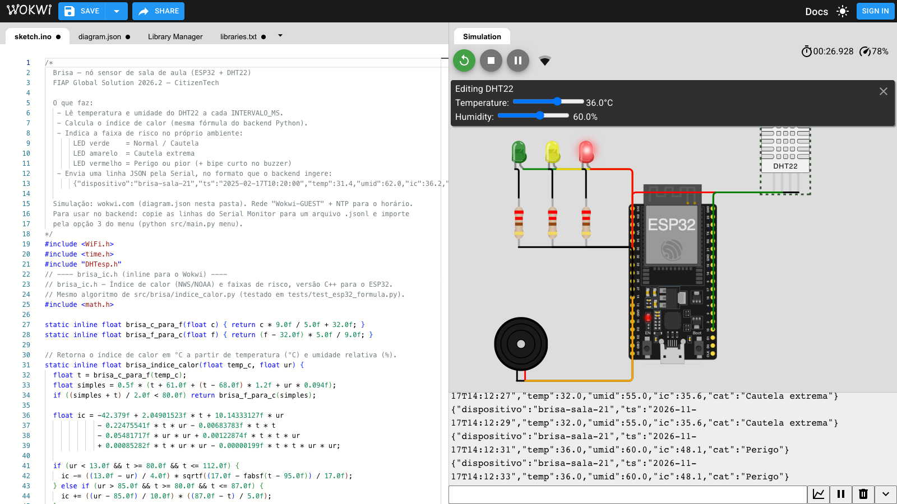
Painel web (Streamlit), para a coordenação, com quatro abas: Boletim das 09h (cartões com as condições da manhã, faixa prevista com cor,
o que fazer hoje, probabilidades e a curva real do dia para conferência); Salas em tempo real (curvas por ambiente, resumo, ambiente mais fresco
e alertas); Panorama 2020-2025; e Calculadora. Menu de terminal (python src/main.py menu), que aplica os fundamentos de
Python: laço principal, dicionário de opções, validação de entrada com try/except e repetição até o valor ser válido.
def ler_float(msg: str, minimo: float, maximo: float) -> float:
while True:
texto = input(msg).strip().replace(",", ".")
try:
valor = float(texto)
except ValueError:
print(" ! Digite um número válido.")
continue
if minimo <= valor <= maximo:
return valor
print(f" ! O valor deve estar entre {minimo} e {maximo}.")| Disciplina | O que foi aplicado | Onde |
|---|---|---|
| Lógica e programação em Python | Funções, laços, condicionais, dicionários, listas, tratamento de exceções e leitura de arquivos CSV/JSONL | cli.py, sensor.py, indice_calor.py |
| Estatística | Média, desvio-padrão, mediana, percentil 95, correlação de Pearson, teste t de Welch | analise.py, notebook |
| Análise e tratamento de dados (Pandas/NumPy/Matplotlib/Seaborn) | Limpeza, interpolação, agregações, tabelas dinâmicas, 8 gráficos | dados.py, analise.py |
| Machine Learning (regressão e classificação) | Regressão Linear e Random Forest; Regressão Logística, Árvore e Random Forest; validação temporal; métricas | modelo.py |
| Banco de dados | Modelo relacional, DDL, chaves estrangeiras, CHECK, UNIQUE, índices, consultas com JOIN e agregação | banco.py, brisa.db |
| Sensores e IoT (ESP32) | DHT22, LEDs, buzzer, Wi-Fi/NTP, serialização JSON, cálculo embarcado | src/esp32/ |
| UX e produto | Persona, jornada, boletim acionável, código de cores por faixa, linguagem simples | app.py |
| Sustentabilidade e ODS | ODS 3, 4, 11 e 13, metas e indicadores de impacto | Seções 1.5 e 4.3 |
python src/main.py tudo) e conferidos
pela equipe. Resultados com dados reais: seções 3.1 e 3.2. Demonstração com escola fictícia e leituras simuladas: seção 3.3.| Cidade | Média | Desvio | Mediana | P95 | Máximo | % horas ≥ 32,2 °C |
|---|---|---|---|---|---|---|
| Teresina (PI) | 32,4 | 3,8 | 33,2 | 37,5 | 40,5 | 61,1 |
| Manaus (AM) | 31,5 | 3,8 | 32,2 | 37 | 40,5 | 49,6 |
| Cuiabá (MT) | 30,7 | 5,6 | 31,6 | 38,4 | 43,5 | 45,3 |
| Rio de Janeiro (RJ) | 26,5 | 4,9 | 25,5 | 35,7 | 47,8 | 14,8 |
| São Paulo (SP) | 22,1 | 5 | 22,3 | 29,9 | 36,6 | 1 |
| Cidade | Normal | Cautela | Cautela extrema | Perigo |
|---|---|---|---|---|
| Cuiabá (MT) | 26,6 | 28,1 | 42,7 | 2,6 |
| Manaus (AM) | 18 | 32,4 | 49,4 | 0,2 |
| Rio de Janeiro (RJ) | 62 | 23,3 | 13,9 | 0,9 |
| São Paulo (SP) | 82,5 | 16,6 | 1 | 0 |
| Teresina (PI) | 13,5 | 25,4 | 60,9 | 0,2 |
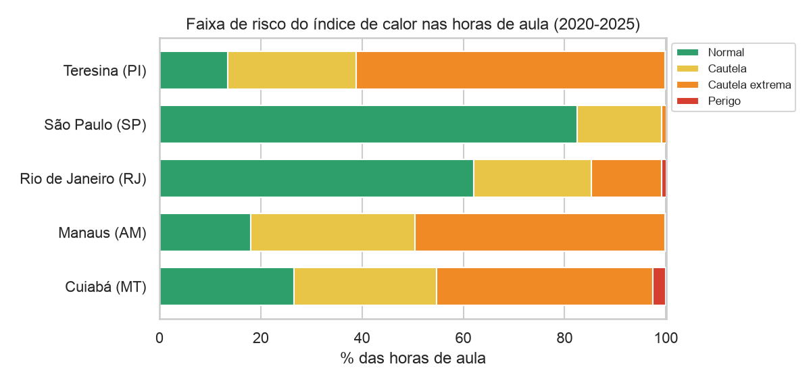
Em Teresina, 61.1% das horas de aula ficaram em Cautela extrema ou pior; em Manaus, 49.6%; e em Cuiabá, 45.3%. No Rio de Janeiro, a mediana é moderada (25.5 °C), mas a cauda é longa: o máximo chegou a 47.8 °C, em faixa de Perigo, o que mostra a importância de prever os dias excepcionais. Em São Paulo o risco externo é baixo (1.0%), mas salas mal ventiladas podem ficar acima disso, e é aí que entra o sensor.
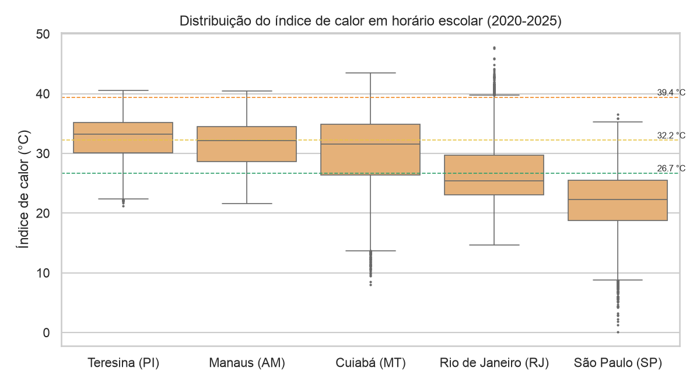
| Cidade | 2020 | 2021 | 2022 | 2023 | 2024 | 2025 |
|---|---|---|---|---|---|---|
| Cuiabá (MT) | 1.452 | 1.200 | 1.032 | 1.360 | 1.511 | 1.244 |
| Manaus (AM) | 1.483 | 1.112 | 1.208 | 1.532 | 1.830 | 1.379 |
| Rio de Janeiro (RJ) | 330 | 309 | 351 | 518 | 541 | 495 |
| São Paulo (SP) | 34 | 3 | 0 | 55 | 50 | 23 |
| Teresina (PI) | 1.707 | 1.644 | 1.546 | 1.766 | 1.942 | 1.922 |
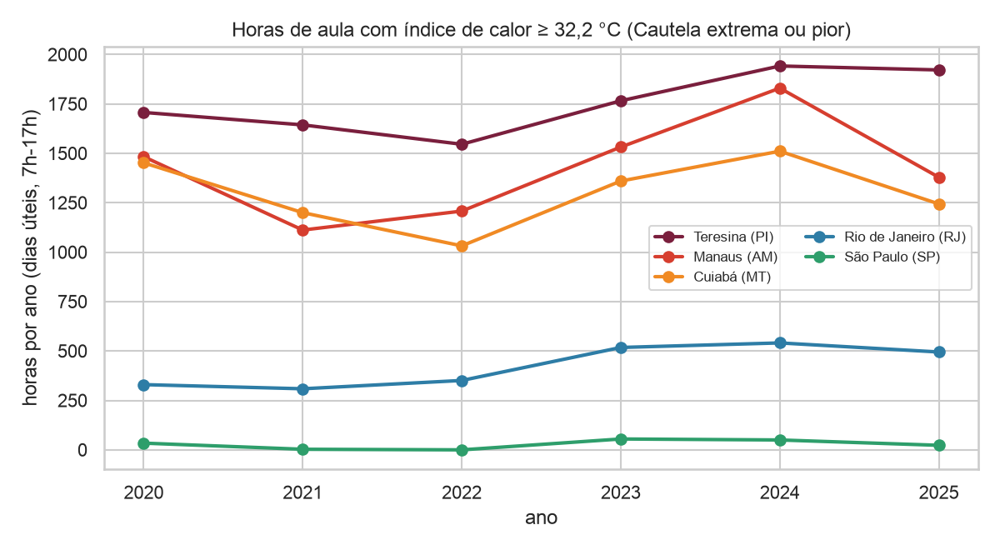
| Cidade | 2020 | 2021 | 2022 | 2023 | 2024 | 2025 |
|---|---|---|---|---|---|---|
| Cuiabá (MT) | 196 | 174 | 155 | 179 | 204 | 178 |
| Manaus (AM) | 207 | 155 | 170 | 200 | 236 | 195 |
| Rio de Janeiro (RJ) | 40 | 40 | 47 | 69 | 69 | 63 |
| São Paulo (SP) | 6 | 0 | 0 | 7 | 7 | 2 |
| Teresina (PI) | 238 | 223 | 216 | 232 | 252 | 245 |
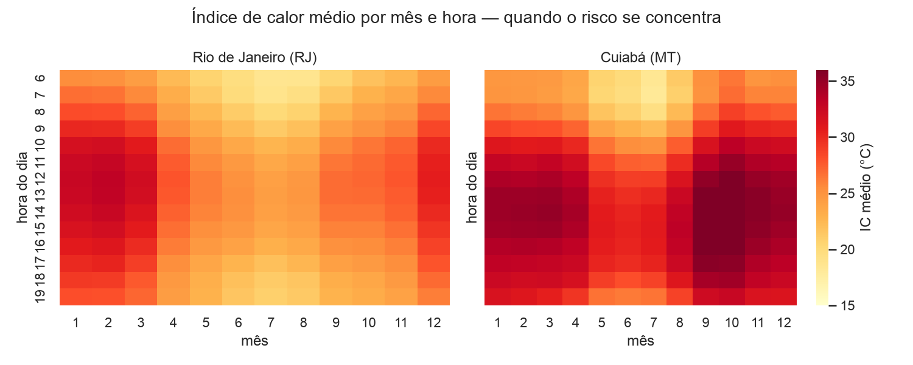
| Cidade | Média 2020-22 (°C) | Média 2023-25 (°C) | Diferença | t | p-valor |
|---|---|---|---|---|---|
| Cuiabá (MT) | 34,14 | 35,11 | 0,97 | 4,78 | 0 |
| Manaus (AM) | 34,07 | 35,24 | 1,18 | 9,86 | 0 |
| Rio de Janeiro (RJ) | 28,18 | 29,56 | 1,38 | 5,19 | 0 |
| São Paulo (SP) | 24,55 | 25,84 | 1,29 | 5,94 | 0 |
| Teresina (PI) | 35,04 | 36,09 | 1,05 | 11,05 | 0 |
O pico diário médio foi de 1,0 a 1,4 °C maior em 2023-2025 do que em 2020-2022 nas cinco cidades (p < 0,001). Cautela na interpretação: o período inclui o El Niño forte de 2023-2024, e seis anos não bastam para estimar tendência climática. O resultado descreve o período, não prova causa.
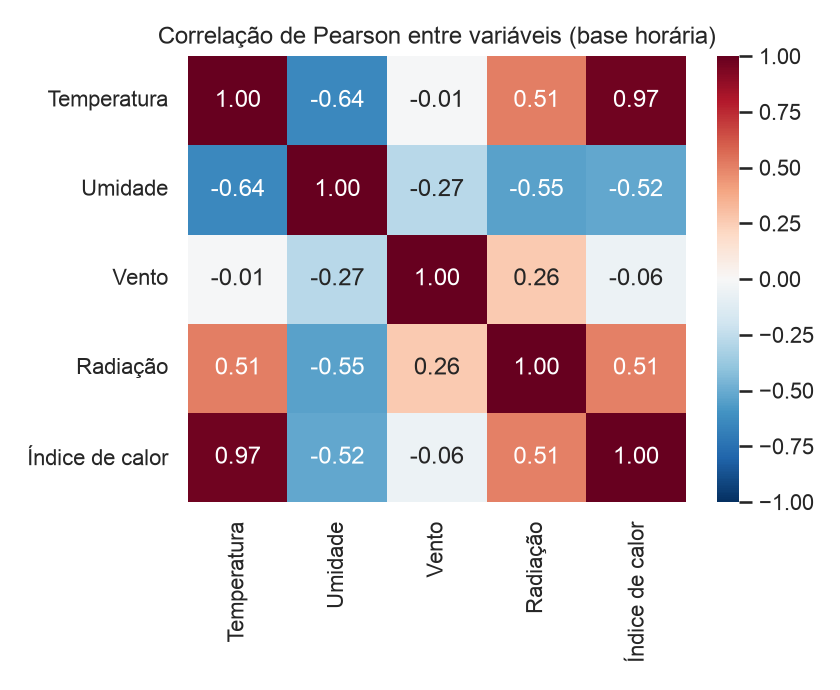
| Modelo | MAE (°C) | RMSE (°C) | R² |
|---|---|---|---|
| Linha de base (pico de ontem) | 1,848 | 2,786 | 0,748 |
| Regressão Linear | 1,544 | 2,078 | 0,86 |
| Random Forest | 1,33 | 1,846 | 0,889 |
O Random Forest reduziu o erro médio absoluto do pico de 1,848 °C (persistência) para 1,33 °C (28% menor), com R² = 0,889.
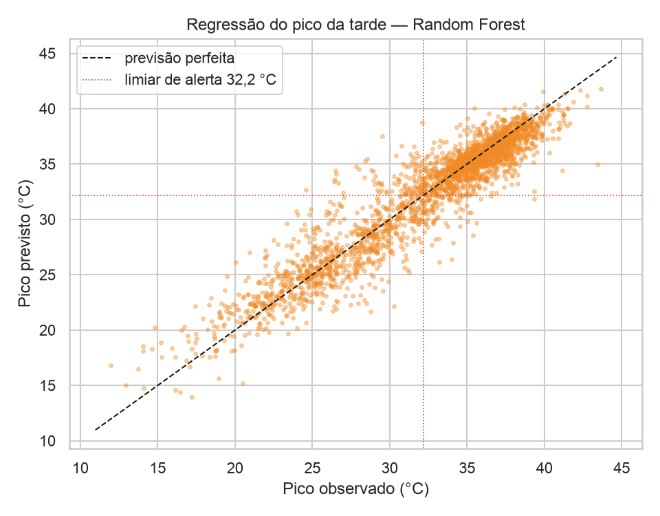
| Modelo | Acurácia | F1-macro | Recall C. extrema | Recall Perigo |
|---|---|---|---|---|
| Linha de base (faixa de ontem) | 0,78 | 0,665 | 0,883 | 0,487 |
| Regressão Logística | 0,733 | 0,642 | 0,71 | 0,868 |
| Árvore de Decisão | 0,771 | 0,67 | 0,791 | 0,776 |
| Random Forest | 0,836 | 0,726 | 0,904 | 0,553 |
| Faixa | Precisão | Recall | F1 | Dias |
|---|---|---|---|---|
| Normal | 0,832 | 0,875 | 0,853 | 527 |
| Cautela | 0,659 | 0,623 | 0,641 | 486 |
| Cautela extrema | 0,914 | 0,904 | 0,909 | 1.526 |
| Perigo | 0,457 | 0,553 | 0,5 | 76 |
| Cidade | Acurácia | Dias de teste |
|---|---|---|
| Cuiabá (MT) | 0,788 | 523 |
| Manaus (AM) | 0,899 | 523 |
| Rio de Janeiro (RJ) | 0,728 | 523 |
| São Paulo (SP) | 0,836 | 523 |
| Teresina (PI) | 0,927 | 523 |
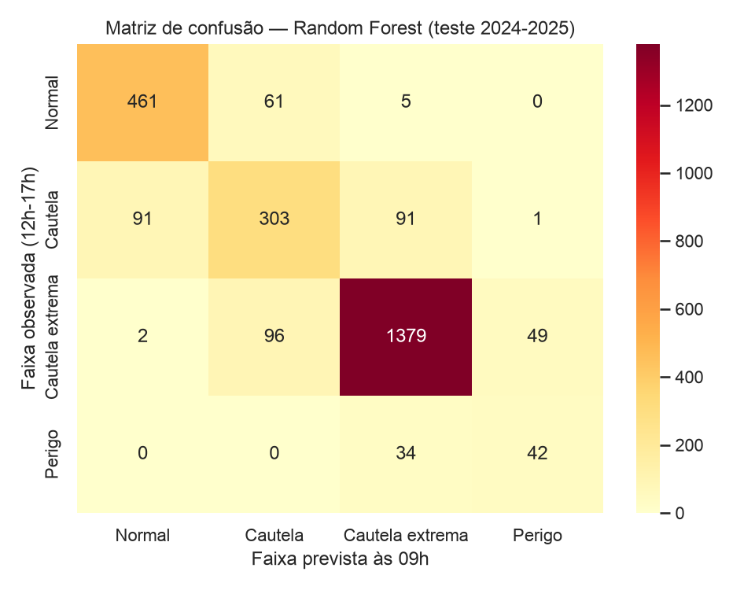
O Random Forest teve a melhor acurácia (83,6%) e o melhor F1-macro (0,726). Seu ponto fraco é a classe Perigo (recall 55,3%). Por isso existe o aviso preventivo: com o limiar de 0,1 definido na validação, o recall de Perigo no teste subiu para 86,8% (66 de 76 dias), com precisão de 23,5% (281 avisos). A precisão no teste ficou abaixo da observada na validação, sinal de mudança na distribuição entre os períodos. Mantivemos o aviso porque ele pede só vigilância (acompanhar sensores e preparar o remanejamento), uma ação de baixo custo diante do risco de não avisar. Ainda assim, a precisão precisa ser monitorada num piloto.
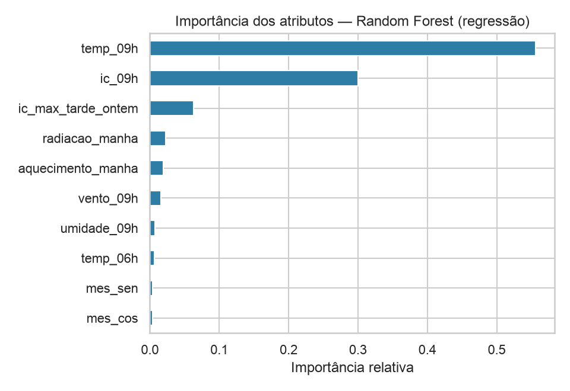
A demonstração escolhe automaticamente a semana letiva com o dia mais quente de fevereiro-março de 2025 no Rio de Janeiro (17 a 21/02/2025) e roda o fluxo completo: boletins das 09h com dados reais, leituras internas simuladas a cada 10 min em três ambientes, ingestão no banco e alertas.
| Dia | Pico previsto (°C) | Faixa prevista | P(Perigo) | Pico observado (°C) | Faixa observada |
|---|---|---|---|---|---|
| 2025-02-17 | 38,7 | Cautela extrema | 0,426 | 38,2 | Cautela extrema |
| 2025-02-18 | 39,5 | Perigo | 0,749 | 39,8 | Perigo |
| 2025-02-19 | 36,6 | Cautela extrema | 0,234 | 35,8 | Cautela extrema |
| 2025-02-20 | 37,2 | Cautela extrema | 0,02 | 37,5 | Cautela extrema |
| 2025-02-21 | 36,6 | Cautela extrema | 0,187 | 35,2 | Cautela extrema |
O boletim das 09h acertou a faixa da tarde em 5 de 5 dias dessa semana, incluindo o único dia de Perigo (18/02). Em três dias, o aviso preventivo de Perigo foi emitido e a tarde ficou em Cautela extrema, o comportamento conservador esperado.
| Ambiente (SIMULADO) | IC médio | IC máximo | min ≥ 32,2 °C | min ≥ 39,4 °C |
|---|---|---|---|---|
| Sala 21 — 2º andar, telhado de fibrocimento | 41,6 | 48,6 | 3.010 | 2.250 |
| Quadra coberta | 38,6 | 45,6 | 2.920 | 1.450 |
| Sala 12 — térreo, ventilação cruzada | 37,3 | 42,8 | 2.920 | 780 |
Foram 915 leituras gravadas, 2 linhas propositalmente corrompidas rejeitadas com o motivo registrado (JSON truncado e temperatura de 85 °C), 166 alertas em tempo real e 5 alertas de previsão. Pela hipótese de simulação, a sala do 2º andar sob telhado de fibrocimento acumula mais tempo em Perigo, e o painel indica a sala térrea como destino para remanejar turmas.
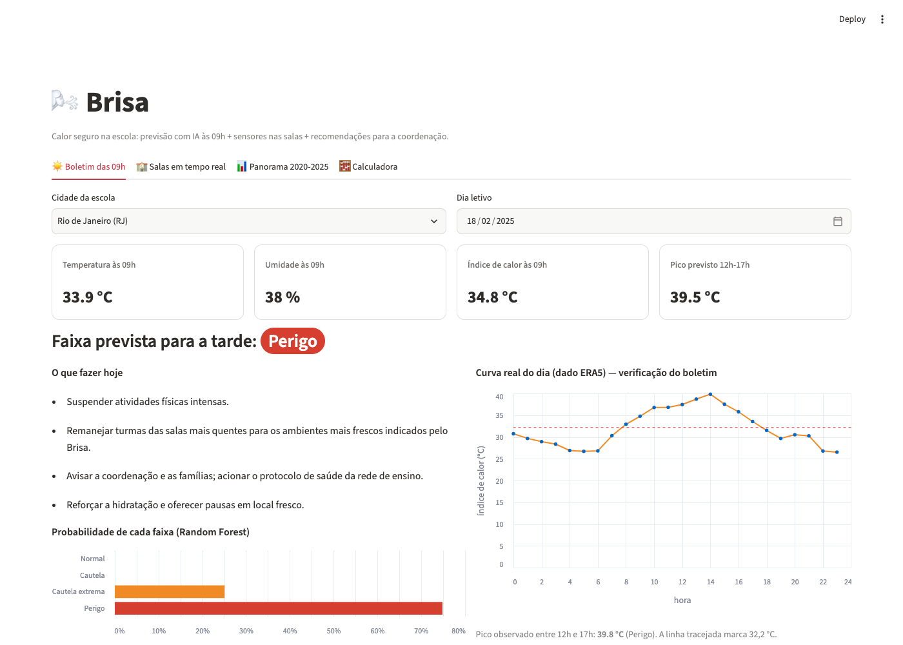
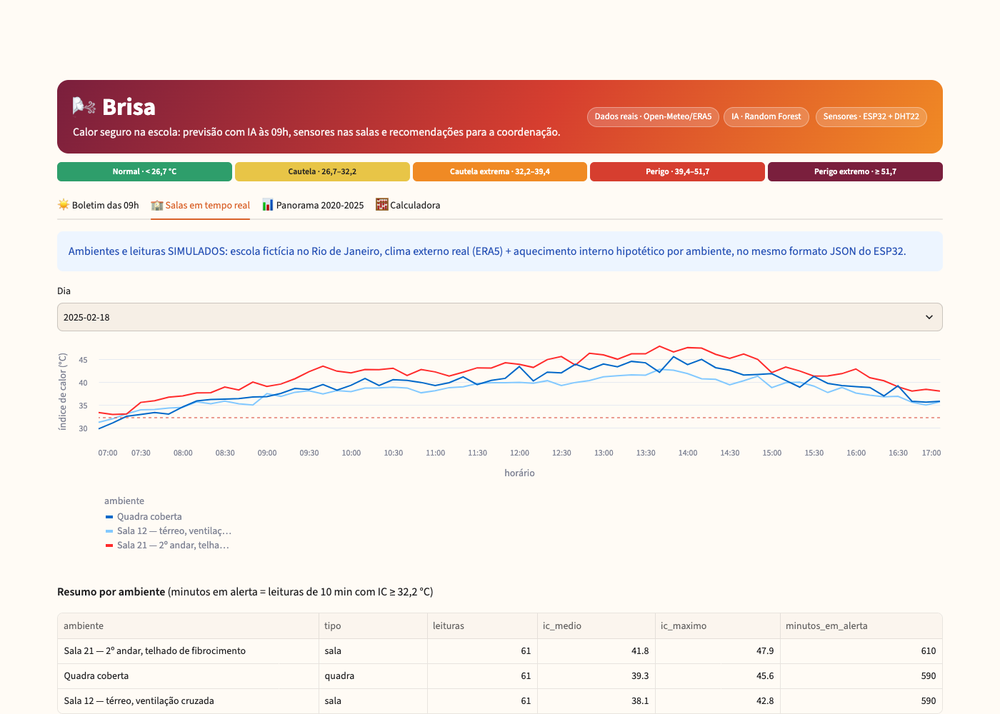
A suíte tests/test_brisa.py tem 32 casos, todos aprovados. Ela cobre: conferência do índice com a tabela do NWS; limites das faixas;
entradas inválidas; limpeza (duplicatas, valores impossíveis, interpolação); ausência de vazamento no dataset de ML; regras de alerta; validação das linhas do
ESP32; ingestão com deduplicação e rejeição; regras CHECK do banco; previsões válidas; superioridade do modelo sobre a linha de base; e
equivalência entre a fórmula em C++ do ESP32 (compilada no teste) e a versão em Python.
Bugs encontrados pelos testes: o teste de integridade do banco falhou na primeira execução porque INSERT OR IGNORE descartava em silêncio
leituras impossíveis e as contava como "duplicadas". A correção está no Código 5. Segundo bug, encontrado ao ingerir a saída real do firmware no Wokwi: o horário era gravado só até os minutos, e leituras feitas a cada 2 segundos viravam duplicatas (10 de 11). Passamos a gravar com segundos e criamos um teste de regressão que ingere a saída real do ESP32.
Trecho de docs/evidencia_testes.txt:
tests/test_brisa.py::test_validacao_rejeita_linhas_ruins[{"dispositivo": "brisa-sala-21", "ts": "2025-02-17T10:00:00", "temp": 34.0, "umid": 101}] PASSED [ 71%]
tests/test_brisa.py::test_validacao_rejeita_linhas_ruins[{"dispositivo": "brisa-sala-21", "ts": "", "temp": 34.0, "umid": 60.0}] PASSED [ 75%]
tests/test_brisa.py::test_ingestao_grava_deduplica_e_alerta PASSED [ 78%]
tests/test_brisa.py::test_banco_rejeita_valor_fisicamente_impossivel PASSED [ 81%]
tests/test_brisa.py::test_previsao_retorna_campos_validos PASSED [ 84%]
tests/test_brisa.py::test_previsao_sem_atributos_falha PASSED [ 87%]
tests/test_brisa.py::test_modelo_supera_linha_de_base PASSED [ 90%]
tests/test_brisa.py::test_formula_do_esp32_igual_a_do_python PASSED [ 93%]
tests/test_brisa.py::test_leituras_com_segundos_nao_viram_duplicatas PASSED [ 96%]
tests/test_brisa.py::test_saida_real_do_firmware_no_wokwi_e_aceita PASSED [100%]
============================== 32 passed in 3.69s ==============================
Trecho de docs/evidencia_execucao_pipeline.txt (python src/main.py tudo):
Alerta de Perigo (limiar calibrado): {'limiar_probabilidade': 0.1, 'escolhido_em': 'validação temporal 2021-2023 (maior recall com precisão >= 35%)', 'recall_validacao': 0.861, 'recall_teste': 0.868, 'precisao_teste': 0.235, 'dias_perigo_reais_teste': 76, 'alertas_emitidos_teste': 281}
=== Escola demonstração — sensores simulados, banco SQLite e boletins ===
Semana simulada: 2025-02-17 a 2025-02-21 | arquivo: data/simulated/leituras_esp32_simuladas.jsonl
Leituras: recebidas 917, gravadas 915, rejeitadas 2, alertas em tempo real 166
rejeitada → linha 11: JSON malformado (Unterminated string starting at)
rejeitada → linha 26: temperatura fora da faixa do sensor: 85.0
Boletins das 09h (previsão x observado):
2025-02-17: previsto 38.7 °C (Cautela extrema + aviso de Perigo) | observado 38.2 °C (Cautela extrema)
2025-02-18: previsto 39.5 °C (Perigo) | observado 39.8 °C (Perigo)
2025-02-19: previsto 36.6 °C (Cautela extrema + aviso de Perigo) | observado 35.8 °C (Cautela extrema)
2025-02-20: previsto 37.2 °C (Cautela extrema) | observado 37.5 °C (Cautela extrema)
2025-02-21: previsto 36.6 °C (Cautela extrema + aviso de Perigo) | observado 35.2 °C (Cautela extrema)
Concluído em 26.7 s
O menu de terminal também foi executado com entradas roteirizadas, inclusive inválidas (texto no lugar de número, sábado como dia letivo); a saída está em
docs/evidencia_menu_cli.txt.
O Brisa mostra que é possível, com dados abertos, Python e componentes de baixo custo, levar à escola uma informação que hoje não chega: quando e onde o calor vai ficar perigoso e o que fazer. Os dados reais confirmam a dimensão do problema: em três das cinco capitais analisadas, de 45% a 61% das horas de aula ocorrem em Cautela extrema ou pior. Os modelos mostram que a previsão às 09h é útil: o erro médio do pico foi de 1,33 °C e a acurácia da faixa, de 83,6%, ambos melhores que a persistência. O protótipo integra programação, estatística, ML, banco de dados e IoT num fluxo coerente, testado e documentado.
Propomos um piloto de um semestre em 5 a 10 escolas, comparando o mesmo período do ano anterior (antes) com o uso do Brisa (depois), com os indicadores abaixo. São resultados esperados, ainda não medidos.
| Indicador | Fonte | Meta de referência |
|---|---|---|
| Horas de aula em Cautela extrema ou pior, por sala | Sensores (tabela leituras) | Redução, após adaptações físicas |
| Tempo de antecedência do aviso | Boletim das 09h → pico 12h-17h | ≥ 3 horas |
| Recall do aviso de Perigo em produção | Previsões x leituras reais | ≥ 85%, com precisão monitorada |
| % de alertas com ação registrada | Novo campo 'acao_tomada' na tabela alertas | ≥ 80% |
| Atendimentos por mal-estar ligado ao calor na escola | Registro da secretaria | Queda em relação ao ano anterior |
| Aulas de educação física remanejadas (e não canceladas) | Registro da coordenação | Acompanhamento |
| Faltas em dias de Perigo | Diário de classe | Comparação com dias amenos |
BREIMAN, L. Random Forests. Machine Learning, v. 45, p. 5-32, 2001. DOI: 10.1023/A:1010933404324.
EXAME. Brasil registra o ano mais quente da história em 2024. Reportagem com dados do INMET, jan. 2025. Disponível em: https://exame.com/esg/brasil-registra-o-ano-mais-quente-da-historia-em-2024. Acesso em: 17 nov. 2026.
HERSBACH, H. et al. The ERA5 global reanalysis. Quarterly Journal of the Royal Meteorological Society, v. 146, p. 1999-2049, 2020. DOI: 10.1002/qj.3803.
MONTEIRO DOS SANTOS, D. et al. Twenty-first-century demographic and social inequalities of heat-related deaths in Brazilian urban areas. PLOS ONE, v. 19, n. 1, e0295766, 2024. DOI: 10.1371/journal.pone.0295766. Acesso em: 17 nov. 2026.
MUÑOZ-SABATER, J. et al. ERA5-Land: a state-of-the-art global reanalysis dataset for land applications. Earth System Science Data, v. 13, p. 4349-4383, 2021. DOI: 10.5194/essd-13-4349-2021.
NATIONAL WEATHER SERVICE (NWS). Heat Index. Disponível em: https://www.weather.gov/safety/heat-index. Acesso em: 17 nov. 2026.
NWS WEATHER PREDICTION CENTER. The Heat Index Equation. Disponível em: https://www.wpc.ncep.noaa.gov/html/heatindex_equation.shtml. Acesso em: 17 nov. 2026.
ONU BRASIL. Objetivos de Desenvolvimento Sustentável. Disponível em: https://brasil.un.org/pt-br/sdgs. Acesso em: 17 nov. 2026.
OPEN-METEO. Historical Weather API. Disponível em: https://open-meteo.com/en/docs/historical-weather-api. Acesso em: 17 nov. 2026.
PEDREGOSA, F. et al. Scikit-learn: Machine Learning in Python. Journal of Machine Learning Research, v. 12, p. 2825-2830, 2011.
REVISTA PESQUISA FAPESP. Aquecimento global amplifica ondas de calor que podem assolar cidades brasileiras até 15 vezes ao ano. 2025. Disponível em: https://revistapesquisa.fapesp.br/aquecimento-global-amplifica-ondas-de-calor-que-podem-assolar-cidades-brasileiras-ate-15-vezes-ao-ano/. Acesso em: 17 nov. 2026.
ROTHFUSZ, L. P. The Heat Index "Equation" (or, More Than You Ever Wanted to Know About Heat Index). NWS Southern Region Technical Attachment SR 90-23. Fort Worth: National Weather Service, 1990.
UNICEF. Learning interrupted: Global snapshot of climate-related school disruptions in 2024. Nova York: UNICEF, jan. 2025. Disponível em: https://www.unicef.org/reports/learning-interrupted-global-snapshot-2024. Acesso em: 17 nov. 2026.
UNICEF BRASIL. Quase 250 milhões de crianças e adolescentes tiveram os estudos interrompidos por crises climáticas em 2024, alerta UNICEF. Comunicado de imprensa, jan. 2025. Disponível em: https://www.unicef.org/brazil/comunicados-de-imprensa. Acesso em: 17 nov. 2026.
ZIPPENFENIG, P. Open-Meteo.com Weather API [software]. Zenodo, 2023. DOI: 10.5281/zenodo.7970649.
Repositório: [COLAR AQUI O LINK DO REPOSITÓRIO PRIVADO — compartilhado com fiap-tutoria] (pasta 1TIAO/GLOBAL-SOLUTION-1). Requisitos: Python 3.10 ou superior.
python -m venv .venv source .venv/bin/activate # Windows: .venv\Scripts\activate pip install -r requirements.txt python src/main.py tudo # preparar + analisar + treinar + demonstração (~30 s) streamlit run src/app.py # painel web em http://localhost:8501 python src/main.py menu # menu de terminal python src/main.py boletim --cidade teresina --data 2024-10-08 python -m pytest -v # testes automatizados
ESP32 (Wokwi): novo projeto ESP32 em wokwi.com; colar src/esp32/sketch.ino, criar brisa_ic.h, substituir o
diagram.json e adicionar a biblioteca DHT sensor library for ESPx. As linhas JSON do Serial Monitor podem ser salvas num .jsonl
e importadas pela opção 3 do menu.
Vídeo demonstrativo: [COLAR AQUI O LINK DO YOUTUBE — NÃO LISTADO]
Repositório GitHub (privado, compartilhado com a conta fiap-tutoria): [COLAR AQUI O LINK DO REPOSITÓRIO PRIVADO — compartilhado com fiap-tutoria]